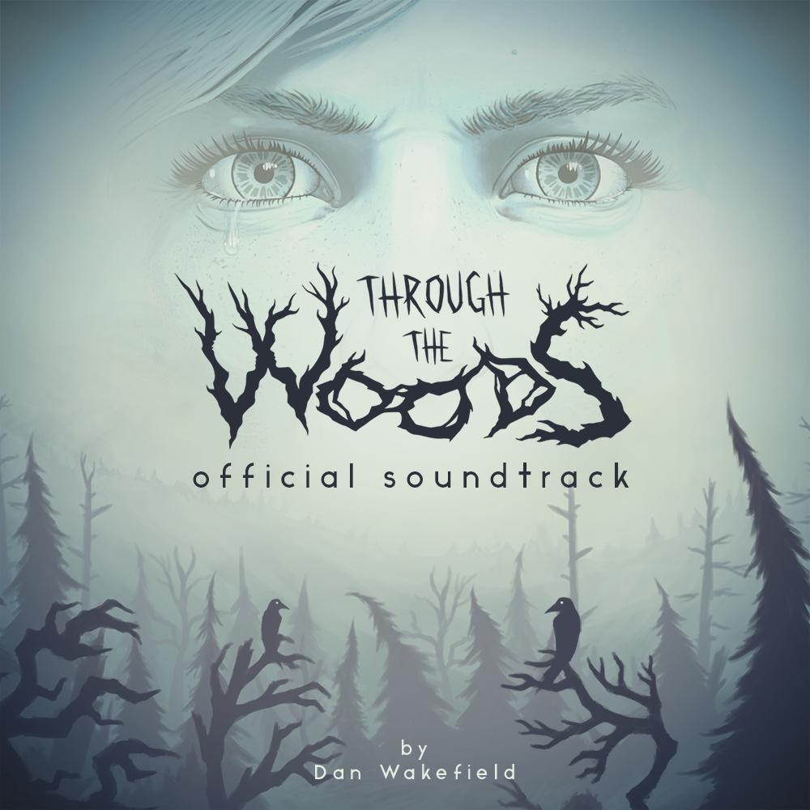

Ela começa com o general espartano Kratos fazendo um trato com Áries, o então Deus da Guerra, que acaba o traindo e o tornando um escravo dos deuses – é isso que dá vender sua alma! Depois de uma batalha épica com os deuses do Olimpo grego, agora chegou a vez de o cara dar uma tretada daquelas com os deuses nórdicos.

Senua, a protagonista de Hellblade, é uma guerreira picta traumatizada depois de uma invasão viquingue. Como consequência do ataque, sua psicose se agrava. A história, baseada na mitologia nórdica e mitologia celta, foca-se em Senua, sobre a viagem que ela embarca para o submundo de Helheim, para salvar a alma de seu amado, nessa viagem Senua encontrará e enfrentará seu passados e seus traumas, consequentemente lidando com eles.
A história segue Thora, uma Viking que acaba de morrer. Tendo sofrido uma morte indigna, ela deve viajar pelos nove reinos e derrotar Jotuns, gigantescos elementos da natureza, caos etc. Isso lhe permitirá impressionar os deuses e entrar em Valhala, o pálacio de Odin para onde vão os mortos em batalha (morte digna).
Viking: Battle for Asgard é uma ação-aventura hack and slash jogo de vídeo desenvolvido pela Creative Assembly e publicado pela Sega . Foi anunciado em 21 de agosto de 2007 pela Sega Europe e lançado na América do Norte em 25 de março e na Europa em 28 de março de 2008. O jogo é baseado na mitologia nórdica , onde a guerra entre os deuses provocou mais conflitos no reino mortal de Midgard , onde Freya campeão 's Skarin deve levar Viking forças contra a da deusa Hel .
Ocorrendo em um mundo ficcional inspirado na mitologia nórdica , o jogo conta a história da caravana do jogador como um todo, ao combater uma raça bélica chamada Dredge que despreza os humanos. O jogo segue dois personagens jogáveis, cada um com sua própria história que acaba se fundindo em um. O jogo apresenta uma história interativa que muda dependendo das decisões dos jogadores.
O jogo apresenta iluminação e sons interessantes que enganam e enganam o jogador. Enquanto o jogador explora os bosques, eles encontram muitas cavernas escondidas e passagens contendo segredos sobre a ilha onde o jogo acontece. O personagem principal é equipado apenas com uma lanterna e vai precisar disso e de se esgueirar para passar pela criatura que habita neste lugar sombrio.
